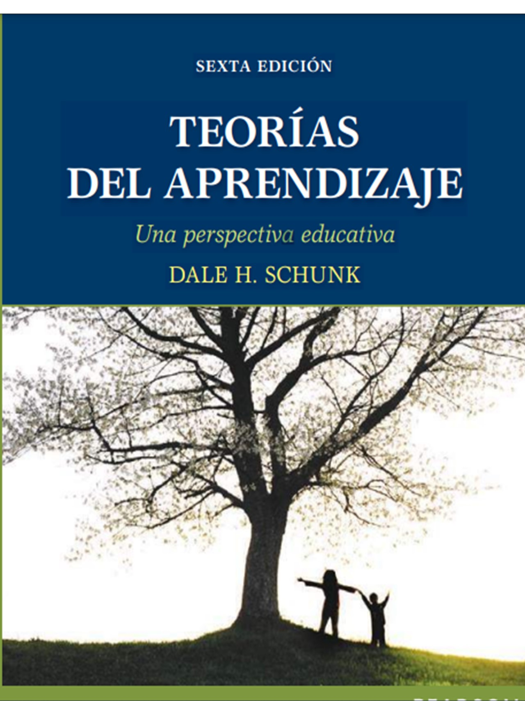
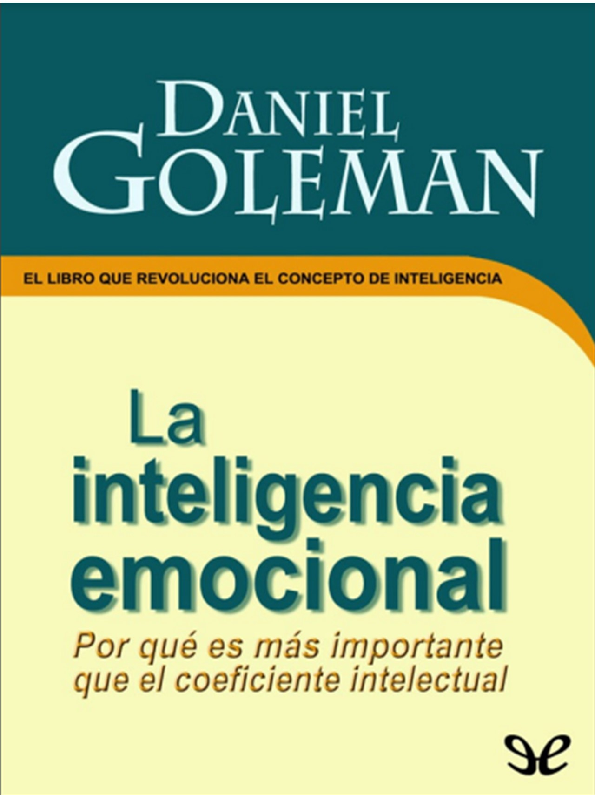
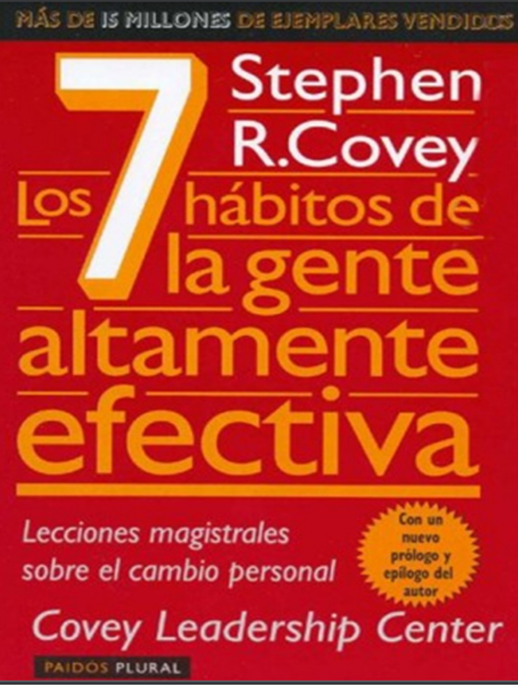
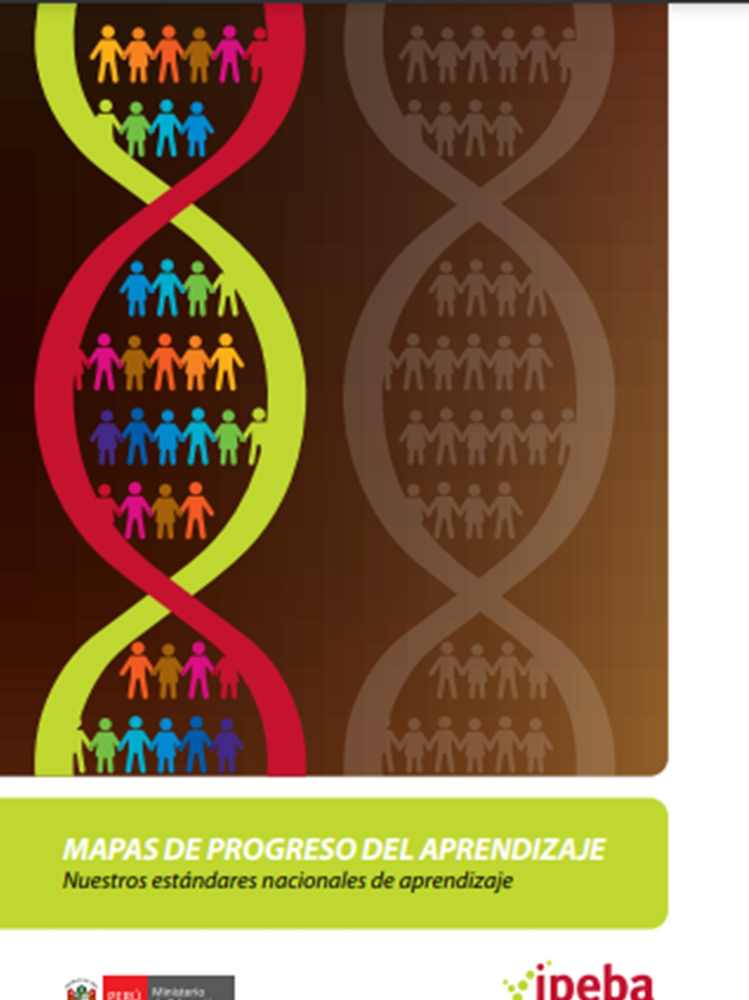
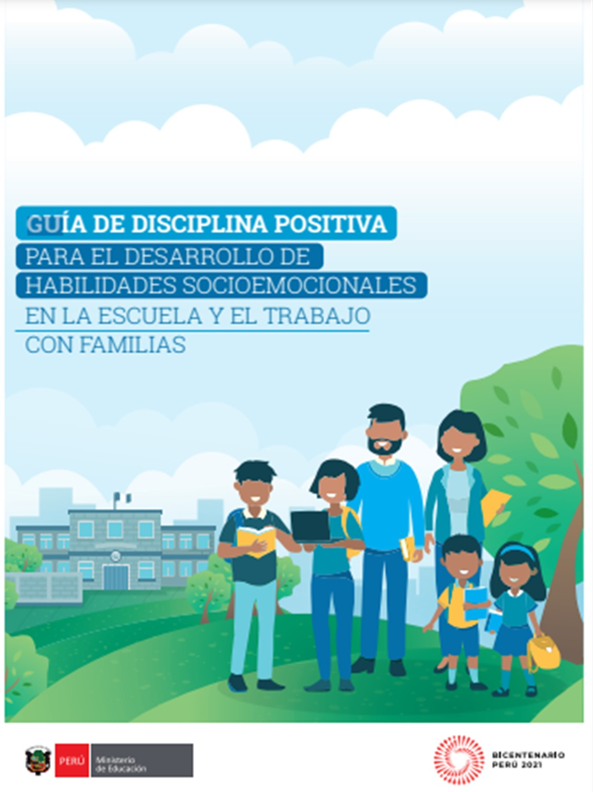
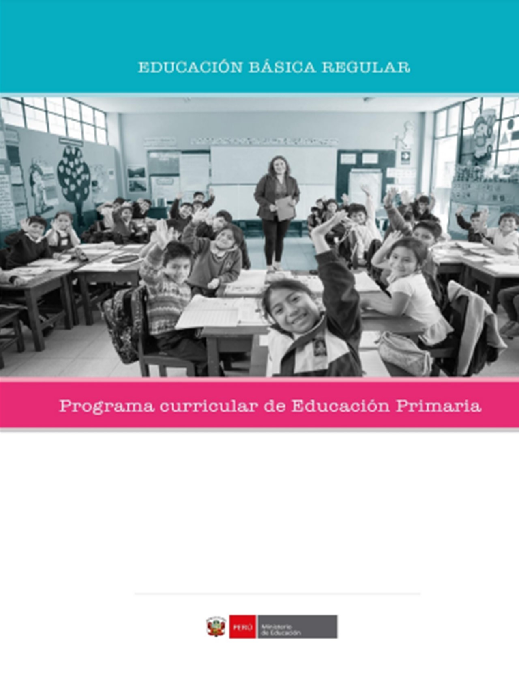
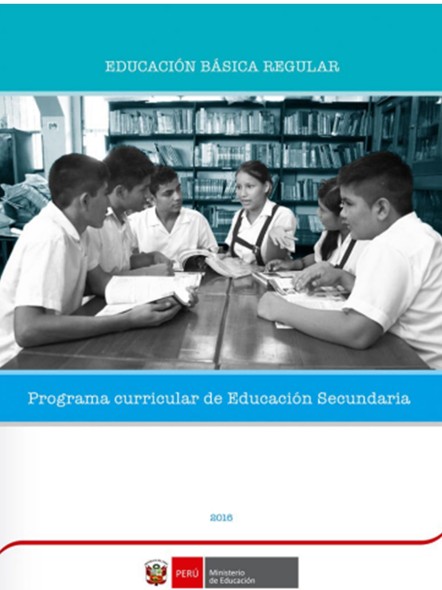
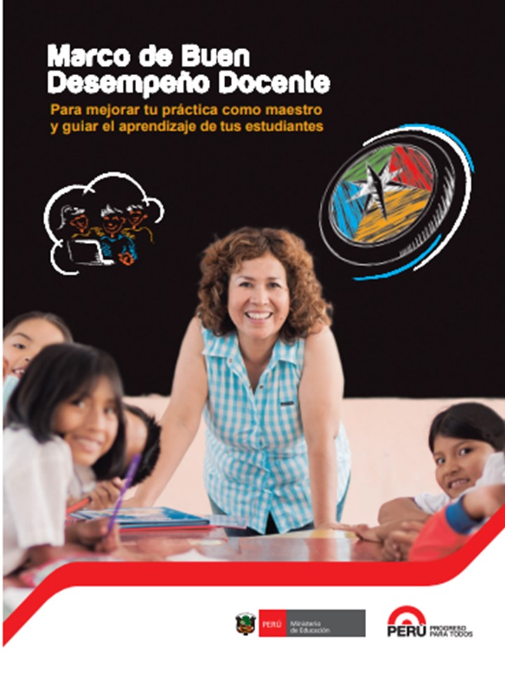

David Marchena
INICIO
BIBLIOGRAFÍA
AULA
QUINTO PRIMARIA
SEXTO PRIMARIA
PRIMERO SECUNDARIA
I.E. INNOVA
FORMACIÓN DOCENTE
COMPUTACIÓN E INFORMÁTICA
MATEMÁTICA
La lectura es para la mente lo que el ejercicio es para el cuerpo
Joseph Addison
Teorías del Aprendizaje (Dale Schunk)

Inteligencia Emocional (Daniel Goleman)

Los Siete Hábitos de la Gente Altamente Efectiva

Juan Salvador Gaviota (Richard Bach)
Mapas de progreso del aprendizaje (Minedu)

Guía de Disciplina Positiva (Minedu)

Programa Curricular Nacional de Educación Primaria (Minedu)

MPrograma Curricular Nacional de Educación Secundaria (Minedu)

Marco del buen Desempeño Docente (Minedu)
